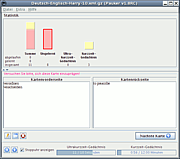

Vokabeltrainer
Zum Verständnis dieses Artikels sind folgende Seiten hilfreich:
Auf dieser Übersichtsseite werden verschiedene Arten von Vokabeltrainern vorgestellt. Es gibt auch plattformunabhängige Vokabeltrainer (mittels Java) oder solche, welche als Shellskript auf der Kommandozeile genutzt werden können. Viele der hier vorgestellten Vokabeltrainer richten sich nach dem Karteikastenprinzip von Leitner. Vokabeltrainer lassen sich damit prinzipiell auch für andere Lerninhalte nutzen.
Einige Vokabeltrainer, welche hier vorgestellt werden, gehören zum KDE Education Project  . Damit die KDE-Vokabeltrainer auf Deutsch bedient werden können, müssen die entsprechenden KDE-Sprachpakete installiert werden. Siehe auch Spracheinstellungen.
. Damit die KDE-Vokabeltrainer auf Deutsch bedient werden können, müssen die entsprechenden KDE-Sprachpakete installiert werden. Siehe auch Spracheinstellungen.
Programme¶
| Anki (Version 2.0) |
Anki¶
Anki ist ein Karteikarten-Programm, das speziell für das Lernen der japanischen Sprache entwickelt wurde. Es ist jedoch sehr flexibel. So lassen sich die Karteikarten individuell anpassen. Es werden verschiedene Felder und Abfragerichtungen unterstützt. Zudem lassen sich auch Bilder, Audio und LaTeX-Formeln eingeben. Intern wird der SuperMemo 2 Algorithmus implementiert, der bereits gelernte Karten in unterschiedlichen Abständen wieder abfragt - je nachdem, wie der Benutzer seinen Kenntnisstand auf einer Skala von 0 - 5 einschätzt.
Cramfire¶
Cramfire ist ein moderner Vokabeltrainer, der platformunabhängig im Browser läuft. Die anhand wissenschaftlichen Erkenntnissen entwickelte Abfragetechnik ermöglicht ein besonders schnelles und effektives Lernen. Durch den webbasierten Ansatz und dem responsive Design kann man mit Cramfire jederzeit bequem und von überall mit jedem PC, Laptop, Tablet oder Smartphone seine Vokabeln lernen, ohne das lästige synchronisieren von Daten.
DingsBums¶
Die Weiterentwicklung von DingBums?! wurde eingestellt. Empfohlen wird der Umstieg auf Anki.
Granule¶
| Granule |
Dies ist ein einfaches Programm, welches die Wörter als Lernkartei mit fünf Fächern organisiert. Es kann eingestellt werden, in welchen Zeitabständen man welches Fach lernen möchte. An Dateiformaten werden
.cdf
.csv
unterstützt.
ignuit¶
ignuit ("I gnu it") ist ein Lernprogramm, dass ebenfalls nach dem Prinzip des Leitner Karteikastensystems funktioniert. Das Programm integriert sich einwandfrei in die GNOME-Desktopumgebung. Das Programm erlaubt es, zusätzliche Audio- und Bilddateien sowie mathematische Formeln (über LaTex) in die Karteikarten einzubinden. ignuit bringt viele praktische Abfrage-Funktionen, eine übersichtliche Bedienoberfläche und einige andere praktische Werkzeuge und Einstellungsmöglichkeiten mit.
Installation¶
Das Programm liegt nicht in den Paketquellen vor. Es kann aber als Fremdpaket über GetDeb installiert werden.
Hinweis!
Fremdpakete können das System gefährden.
Außerdem liegt auf der Projektseite ein tar.gz-Archiv mit dem Quelltext vor, das heruntergeladen, entpackt[4] und kompiliert [8] werden kann.
Hinweis!
Fremdsoftware kann das System gefährden.
Unterstützt werden die Dateiformate (von):
.csv
.tsv
Mnemosyne
jMemorize
Granule
Pauker
KVocTrain 1.0
jMemorize¶
Ein Programm von Rija Djemili, Berlin, welches ebenfalls das Karteikarten-Prinzip verfolgt. Es beinhaltet zahlreiche Einstellungsmöglichkeiten. Der Lernstand in den einzelnen "Decks" wird mit farbigen Säulen dargestellt: jMemorize
Kanagram¶
Kanagram zeigt die zu lernenden Vokabeln als Anagram (oder Buchstabensalat) an. Es können weitere Wörterlisten heruntergeladen werden oder beliebig eigene hinzugefügt werden.
KHangMan¶
Das Programm KHangMan bietet ausschließlich eigene Wörterlisten an, welche thematisch geordnet sind. Man rät einzelne Buchstaben. Kommen diese im Wort vor, werden sie angezeigt. Tippt man daneben, wird schrittweise ein Galgen aufgebaut.
Kiten¶
Kiten ist ein Lernprogramm des japanischen Kanji. Des Weiteren kann es als Japanisch / Englisch Wörterbuch genutzt werden. Das folgende Paket muss installiert[1] werden:
kiten
 mit apturl
mit apturl
Paketliste zum Kopieren:
sudo apt-get install kiten
sudo aptitude install kiten
KWordQuiz¶
 Ein weiteres Programm, das Vokabeln auf Karteikarten darstellen, abfragen und drucken kann. Es ist vielfältig konfigurierbar, so können die Vokabeln auch per Frage und Antwort oder per Multiple-Choice abgefragt werden. Jedoch enthält es keine automatische Ablage je nach Lernstand oder Organisation der Zeitabstände zwischen den Lernphasen. Weitere Informationen im Artikel KWordQuiz.
Ein weiteres Programm, das Vokabeln auf Karteikarten darstellen, abfragen und drucken kann. Es ist vielfältig konfigurierbar, so können die Vokabeln auch per Frage und Antwort oder per Multiple-Choice abgefragt werden. Jedoch enthält es keine automatische Ablage je nach Lernstand oder Organisation der Zeitabstände zwischen den Lernphasen. Weitere Informationen im Artikel KWordQuiz.
Lernkartei¶
| Lernkartei |
Ein weiteres Java-Programm von Hanspeter Hochreutener, welches ebenfalls wie eine Wörterkartei funktioniert. Beim ersten Start wird die Anzahl der Abteile festgelegt. Die Anwendung ist einfach und praktisch: Lernkartei 
Mnemosyne¶
Mnemosyne ist eine freie Lernkartensoftware, die sich nicht nur zum Lernen von Vokabeln, sondern auch von verschiedensten anderen Wissensinhalten eignet. Das Programm zeichnet sich durch die Nutzung verschiedenartiger Medien (Bilder, Audios, Videos, LaTeX), die hierarchische Strukturierbarkeit der Lernkarten mittels Tags sowie die Möglichkeit aus, Lernkarten samt Lernstatus zwischen verschiedenen Computern zu synchronisieren. Dank Unicode-Unterstützung können auch fremde Schriften und Sonderzeichen problemlos genutzt werden. Die Textinhalte der Karten lassen sich recht umfangreich formatieren. Es stehen mehrere Kartentypen für unterschiedliche Frage-Antwort-Situationen zur Verfügung.
| Mnemosyne |
Die Planung der Wiederholungen basiert auf einer leichten Modifikation des bewährten SM-2 Algorithmus. Die Oberfläche ist modern (basierend Qt) und Mnemosyne ist abgesehen von Ubuntu auch für fast alle gängigen Betriebssysteme verfügbar. Lernkarten können in unterschiedlichen Dateiformaten importiert und exportiert werden. Durch Plugins lässt sich der Funktionsumfang erweitern. Es existiert Tauschbörsen für Kartensätze und für Plugins.
Parley¶
Das Programm Parley ist das Nachfolgeprojekt von KVocTrain. Die Oberfläche ist einiges ansprechender und das Programm ist sehr benutzerfreundlich.
Pauker¶
|  |
| Pauker |
Einige Vokabeltrainer nutzen Java und sind daher plattformunabhängig. Pauker ist eines davon. Pauker erinnert sehr stark an gewöhnliche Karteikarten - ist aber viel mehr als das. Das Programm wechselt beim Lernen ständig zwischen Ultrakurzzeit- und Kurzzeit-Gedächtnis. Enthalten sind eine Fülle an fertigen Wörterdateien. Das Programm lässt sich auch über das Wörterlernen hinaus einsetzen. Auch dazu sind fertige Dateipakete auf der Entwicklerseite vorhanden.
Quizlet¶
Quizlet bietet die Möglichkeit neben Vokabeln auch viele andere Dinge zu lernen, die man auf Karteikarten schreiben oder kleben könnte, um diese dann zur Abfrage zu verwenden. Neben einfachem Text und Bildern, können sogar Audio-Aufnahmen zu den einzelnen Karten hinzugefügt werden. Quizlet läuft dabei im Browser und ist somit auch platformunabhängig.
Simpliciter¶
| Simpliciter |
Simpliciter ist ein in Python geschriebener Vokabeltreiner, der besonders für die Benutzung von jüngeren Nutzern ausgelegt ist. wxPython wurde als Toolkit verwendet, weshalb Simpliciter universell auf einer Vielzahl von Systemen einsetzbar ist. Die Unterstützung des Unicode-Standards ermöglicht das Lernen einer Vielzahl an Sprachen. Es existieren viele Funktionen Abfragen individuell den Wünschen des Nutzers anzupassen, weshalb das erfolgreiche Lernen einfach möglich ist: Simpliciter

Voc2brain¶
Das Programm Voc2brain ist ein simpler und benutzerfreundlicher Vokabeltrainer für die Betriebssysteme Windows und Linux, der das Lernen nach dem Leitner-Karteikastensystem ermöglicht. Der Vokabeltrainer fragt nicht nur Vokabeln ab, sondern plant auch den Zeitpunkt der Abfrage. So bietet die Erinnerungsfunktion am Systemstart die Möglichkeit, dass der Benutzer an das Lernen der Vokabeln erinnert wird, sobald Vokabeln abgefragt werden sollten. Die Antworten werden per Tastatur eingegeben, danach entscheidet der User, ob die Antwort richtig oder falsch war.
Vokabeltesteditor¶
Mit diesem vor allem für den Schulunterricht konzipierten kostenlosen online-Werkzeug können Schüler selbst einfach Vokabelquizaufgaben (oder allgemein Texteingabefragensammlungen) erstellen und das Ergebnis in Form von ebenfalls direkt im Browser lauffähigen HTML-Dateien exportieren. Diese HTML-Dateien können anschließend mit jedem Texteditor weiterbearbeitet werden und auch die ergänzende Einbettung von Bildern und Multimediainhalten ist so flexibel möglich. Vokabeltest-Editor
Wörterlisten¶
CSV-Dateien¶
In fast allen vorgestellten Vokabeltrainern lassen sich CSV-Dateien nutzen.
"Das Dateiformat CSV ist eine Textdatei zur Speicherung oder zum Austausch einfach strukturierter Daten. Die Abkürzung CSV steht dabei für Character Separated Values, Comma Separated Values oder Colon Separated Values, weil die einzelnen Werte durch ein spezielles Trennzeichen, beispielsweise das Komma oder Semikolon, getrennt werden. Ein allgemeiner Standard für das Dateiformat CSV existiert nicht...", Zitat und weitere Informationen siehe: Artikel zu CSV bei Wikpedia.
Da dieses Dateiformat von jedem Texteditor beherrscht wird und auch von Tabellenkalkulationsprogrammen verarbeitet wird, ist der Austausch von Wörterlisten einfach. Probleme gibt es dann, wenn Übersetzungen Mehrfachbedeutungen auflisten, welche durch Kommas getrennt sind und dann in CSV gespeichert werden. Die Vokabeltrainer zeigen in einem solchen Fall alle aufgelisteten Wörter in der ersten Spalte an, und nur das letzte Wort in der neuen Spalte.
TXT-Dateien¶
Eine weitere Möglichkeit besteht darin, Wörterlisten als einfache Textdatei mit der Endung .txt zu exportieren. Wenn diese Textdatei mit einem Tabellenkalkulationsprogramm wie OpenOffice.org geöffnet wird, werden die Wörterlisten in Spalten nach Sprachen getrennt dargestellt. Auf diese Art können sie markiert werden und in einen der vielen Vokabeltrainer eingefügt werden.
Fertige Wörterlisten¶
Für alle vorgestellten Programme, die zum KDE Education Project gehören, gibt es zahlreiche fertige Listen , welche heruntergeladen und zum Üben genutzt werden können. Außerdem gibt es auf dict.cc viele vorgefertigte Vokabellisten anderer Nutzer, die sich im CSV-Format exportieren lassen.
 Programmübersicht
Programmübersicht- Erstellt mit Inyoka
-
 2004 – 2017 ubuntuusers.de • Einige Rechte vorbehalten
2004 – 2017 ubuntuusers.de • Einige Rechte vorbehalten
Lizenz • Kontakt • Datenschutz • Impressum • Serverstatus -
Serverhousing gespendet von